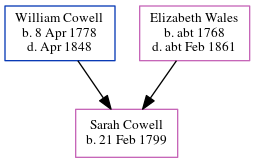

Sarah Cowell 1799 -
[ Home ] | [ Calendar ] | [ Surnames Index ] | [ Census Index ] | [ Family History ]The child of William Cowell and Elizabeth Wales, Sarah Cowell, the first cousin four-times-removed on the mother's side of Nigel Horne, was born in St Peters, Thanet, Kent, England on Feb 21, 17991 and baptized there on Mar 24, 1799.
Parents
- William Castle was born on Apr 8, 1778
- Elizabeth was born c. 1768
Citations
- Kent, Canterbury Archdeaconry Baptisms - Findmypast
Media
Kent, Canterbury Archdeaconry Baptisms Transcription - GBPRS-CANT-B-96346366
Family Tree
Generated by ged2site. Last updated on Jun 11, 2024